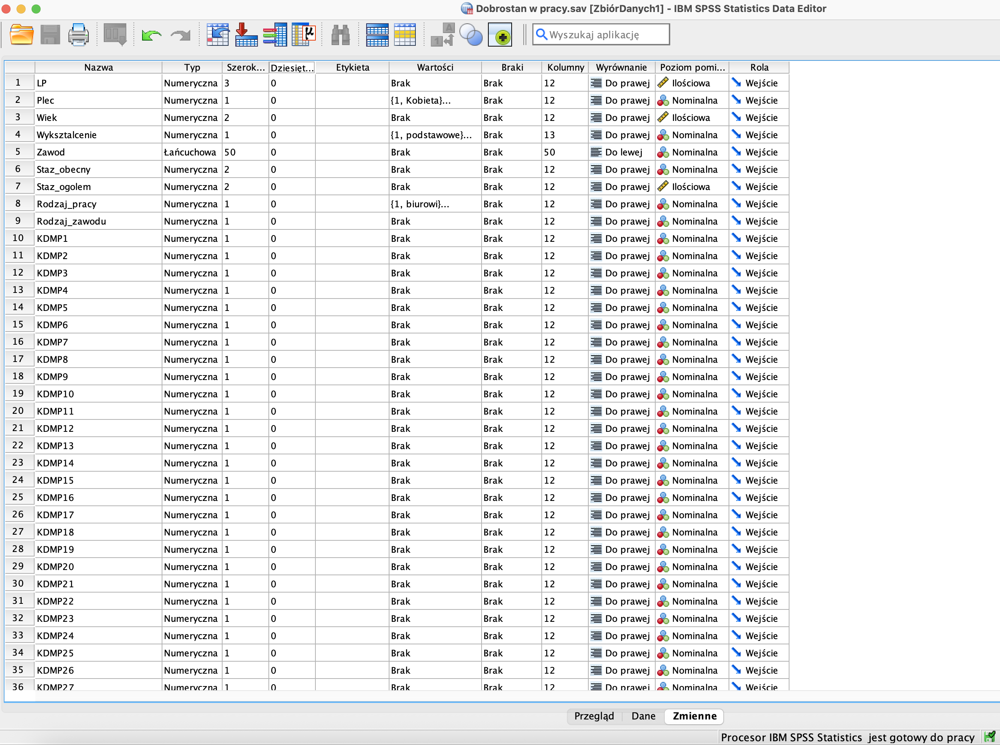

1. Wprowadzenie do SPSS | Tworzenie baz danych | Podstawowe operacje na danych | Tworzenie wskaźników zmiennych
Sylabus i cele zajęć #1
| Treści programowe | Literatura obowiązkowa | |
|---|---|---|
| 1 | Wprowadzenie do SPSS: interfejs, tworzenie bazy danych, podstawowe operacje, wskaźniki zmiennych. | Bedyńska & Cypryańska (2013), Drogowskaz 1 (s. 48–71, 114–130). Wydawnictwo Akademickie Sedno. Józefacka, Kołek, Arciszewska-Leszczuk (2023), Tom 1 (s. 105–114). WN PWN. |
- Poznasz interfejs SPSS i jego podstawowe elementy.
- Nauczysz się tworzyć bazę danych i definiować zmienne.
- Będziesz potrafić wykonywać pierwsze operacje na danych (rekodowanie zmiennych, obliczanie na zmiennych).
- Dowiesz się, czym są wskaźniki zmiennych i jak je tworzyć.
SPSS = Statistical Package for Social Sciences
Pakiet wykorzystywany powszechnie w naukach społecznych: psychologii, socjologii, pedagogice, ale też służy do analizy danych z systemów operacyjnych, transakcyjnych, danych sprzedażowych… zastosowanie wykracza poza zagadnienia sugerowane nazwą pakietu.
Wprowadzenie do SPSS
Interfejs SPSS
Po uruchomieniu programu SPSS zobaczysz okno główne, które składa się z dwóch podstawowych widoków:
- Widok danych (Data View) – tutaj wprowadzamy dane, każdy wiersz to jeden przypadek (np. uczestnik badania), a każda kolumna to zmienna.
- Widok zmiennych (Variable View) – tutaj definiujemy właściwości zmiennych (np. nazwa, typ, etykiety, wartości).
Na górze znajduje się pasek narzędzi i menu główne, w którym znajdziesz wszystkie najważniejsze opcje analizy (m.in. Analiza, Przekształcenia, Wykresy).
Na dole okna możesz przełączać się pomiędzy widokiem danych i widokiem zmiennych, w zależności od tego, czy chcesz pracować na danych czy definiować zmienne.
Poniżej przykład interfejsu SPSS z zaznaczonymi kluczowymi elementami:
Widok zmiennych
Widok zmiennych w SPSS działa jak słownik danych — to tutaj szczegółowo opisujemy wszystkie zmienne w pliku: ich nazwy, typy, sposób kodowania i poziom pomiaru.
Dlaczego to ważne?
Dobrze uzupełnione informacje o zmiennych ułatwiają orientację w pliku i poprawiają czytelność raportów wyników analiz.
Najważniejsze właściwości zmiennych
Nazwa zmiennej: krótka, precyzyjna i bez spacji (np. wiek, plec, dobrostan).
Typ zmiennej: Numeryczny (liczbowy) — umożliwia wykonywanie obliczeń lub Łańcuchowy (string) — tekstowy, służy np. do opisu zawodu.
⚠️ Uwaga: SPSS przeprowadza analizy tylko na liczbach!
** Etykieta**: pełniejszy opis zmiennej, np. całe pytanie z kwestionariusza.Dzięki etykietom raporty są bardziej zrozumiałe.
Wartości : kodowanie odpowiedzi liczbowych, np.:
1 = kobieta, 2 = mężczyzna
1 = bardzo rzadko, 2 = rzadko, 3 = przeciętnie, 4 = często, 5 = bardzo często
Poziom pomiaru: określa, jakiego rodzaju jest zmienna:
- Nominalna → kategorie bez uporządkowania (np. płeć, zawód)
- Porządkowa → kategorie z uporządkowaniem (np. poziom wykształcenia)
- Ilościowa → zmienne liczbowe (np. wiek, staż pracy)
Najważniejsze właściwości zmiennych to:
- Nazwa zmiennej — krótka, precyzyjna i bez spacji (np.
wiek,plec, nazwa podskali).
- Typ zmiennej — numeryczny (liczbowy) lub tekstowy (string). Uwaga: program rozumie i robi obliczenia jedynie na liczbach.
- Etykieta — gdy nazwa zmiennej jest zbyt krótka, to etykieta przedstawia bardziej szczegółowe informacje o tym, co oznaczają zmienne (np. pełne brzmienie pytania czy stwierdzenia w ankiecie)
- Wartości — kodowanie wartości liczbowych (np. 1 = kobieta, 2 = mężczyzna lub 1 = bardzo rzadko, 2 = rzadko, 3 = przeciętnie 4 = często, 5 = bardzo często).
- Poziom pomiaru — skala zmiennej:
- Nominalna (np. płeć, zawód),
- Porządkowa (np. poziom wykształcenia),
- Ilościowa (np. wiek, staż pracy).
- Nominalna (np. płeć, zawód),
Przykładowy widok zmiennych w SPSS:

👉 Wskazówka: Poprawne zdefiniowanie zmiennych to podstawa każdej analizy.
Zła definicja (np. traktowanie zmiennej jakościowej jako ilościowej) prowadzi do błędnych wyników.
Widok danych
Poniżej przykład interfejsu SPSS z widokiem danych i zaznaczonymi kluczowymi elementami:
Dane to informacje o osobie badanej, a każda pojedyncza informacja stanowi osobny element danych. Wpisując dane o osobie badanej, należy pamiętać o tym, że wyniki jednej osoby muszą znaleźć się w jednym (i tylko jednym) wierszu. Nawet jeśli badamy tę samą osobę dwukrtonie tym samym testem, to jej odpowiedzy z testów muszą znaleźć się w jednym wierszu w sąsiadujących kolumnach - najpierw wyniki pierwszego pomiaru, potem wyniki drugiego. Kaźdy kawałek informacji o tej osobie stanowi zmienną.
W SPSS każda odpowiedź lub pomiar jest osobną zmienną, a każdy badany to jeden wiersz w tabeli danych.
Dane surowe to wszystkie wyniki zebrane w badaniu w nieprzetworzonej formie – takie, jakie pochodzą bezpośrednio od osoby badanej (np. odpowiedzi w kwestionariuszu, punkty w teście, czas reakcji w eksperymencie).
Kodowanie danych to proces przekładania tekstowych informacji o osobie na informacje liczbowe, np. płeć.
⚠️ Pamiętaj: Osoby badane umieszczamy w wierszach, zmienne w kolumnach, 1 osoba badana = 1 wiersz
Tworzenie baz danych
- Otwórz SPSS i stwórz nowy plik danych.
- Wprowadź zmienne (min. 5): płeć, wiek, sen, nastój (1-10), ocena satysfakcji (1-5).
- Wpisz dane dla 5 fikcyjnych osób.
Podstawowe operacje na danych
Tworzenie wskaźników ziemnnych
📖 Słowniczek pojęć
SPSS (Statistical Package for the Social Sciences) – program do analizy statystycznej danych, szeroko wykorzystywany w naukach społecznych, psychologii i biznesie.
Zmienna (Variable) – cecha, którą badamy, np. wiek, płeć, wynik testu. W SPSS każda zmienna ma swoją kolumnę.
Wartość (Value) – konkretna liczba lub kategoria przypisana danej zmiennej, np. wiek = 23, płeć = 1 (kobieta).
**Widok ziennych* – zakładka w SPSS, gdzie definiujemy zmienne (nazwy, typy, etykiety, kody wartości).
Widok danych – zakładka w SPSS, gdzie wprowadzamy dane (wiersze = osoby, kolumny = zmienne).
Rekodowanie – zamiana wartości zmiennej na inne (np. 1=„mężczyzna” → 0=„mężczyzna”).
Wskaźnik zmiennej – zmienna stworzona na podstawie kilku innych (np. średnia z kilku pytań tworzy wskaźnik dobrostanu).